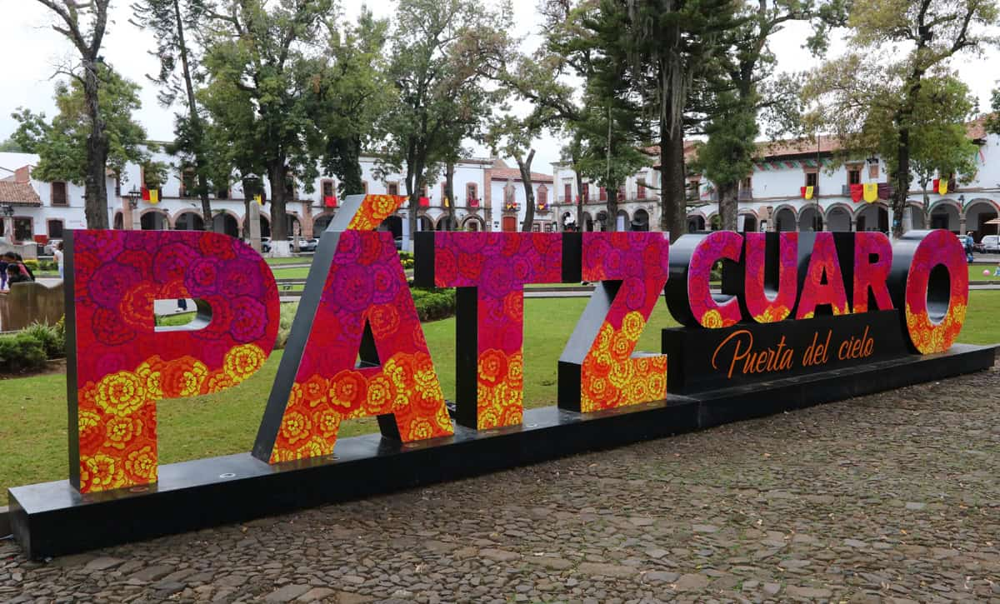
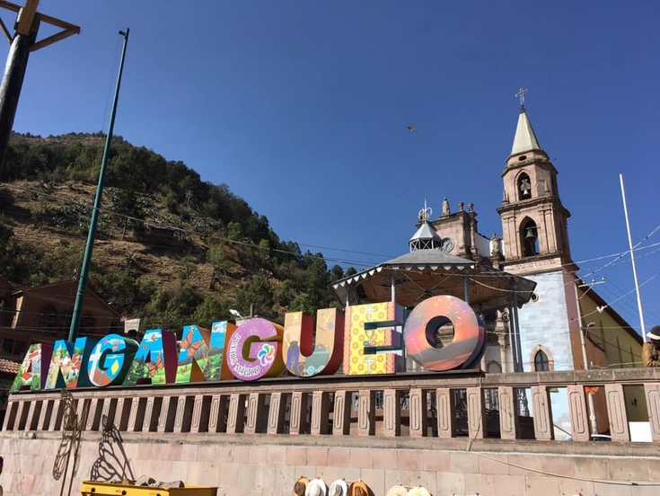
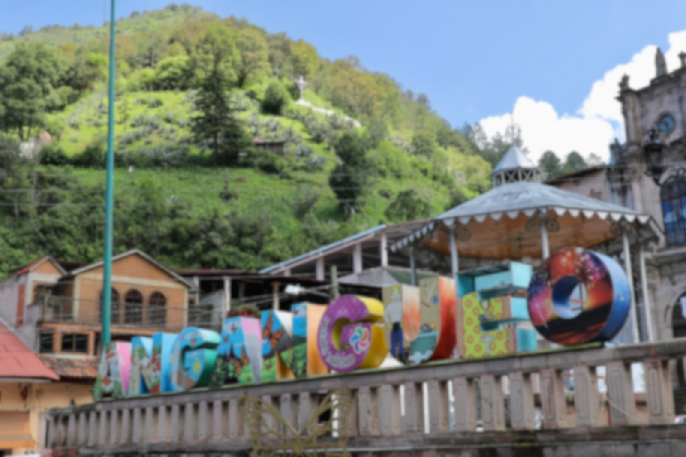
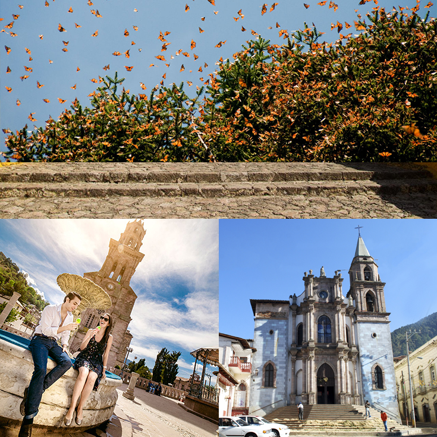
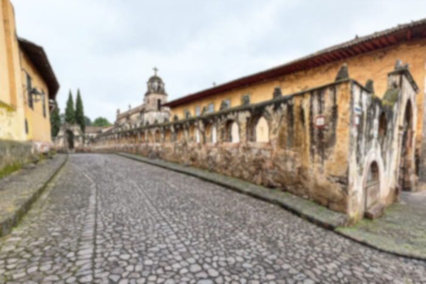
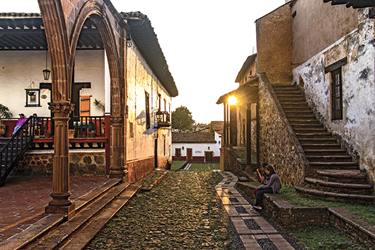
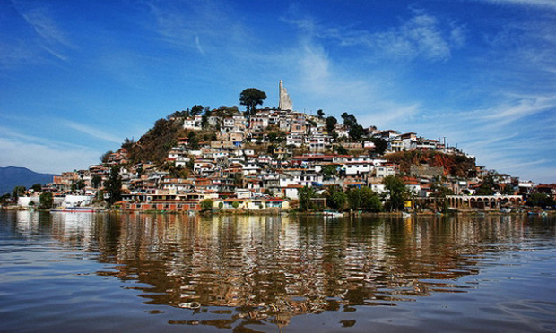
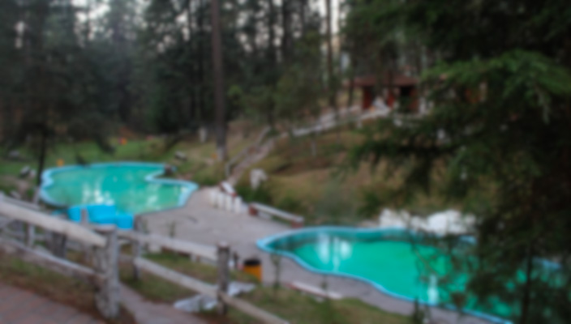
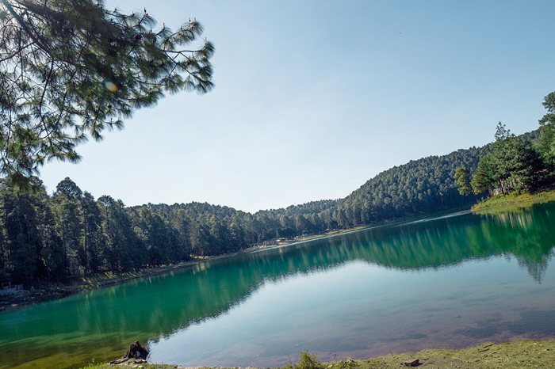

Mineral de Angangueo es una población
del estado de Michoacán, en México.
El pueblo es famoso por su cercanía
al santuario de mariposas, lugar que
visitan como actividad recreativa, de
entretenimiento y educativa.



¡Descubre las zanas turisticas que tiene Angangueo!

Pátzcuaro, “La puerta del cielo”
como se traduce su nombre,
es uno de los escenarios
naturales más hermosos,
con su vocación lacustre,
este poblado parece salido
de la imaginación: montañas
cubiertas de pinos, abetos y
juníperos alrededor del lago,
casas de madera y adobe,
y algunos de los más antiguos
monasterios e iglesias del país.


¡Adentrate para que conozcas las zonas turisticas que Patzcuaro te ofrece!

CIUDAD HIDALGO


Es una ciudad situada en una zona rural
y montañosa. Aunque la mayor parte de
la ciudad está formada por edificios
modernos, su principal monumento es
la iglesia y antiguo monasterio de San
José, del siglo XVI. Antiguamente se
llamaba Taximaroa y era la parte del
Imperio purépecha más cercana al
Imperio azteca.
¡Descubre los lugares turisticos que puedes visitar!